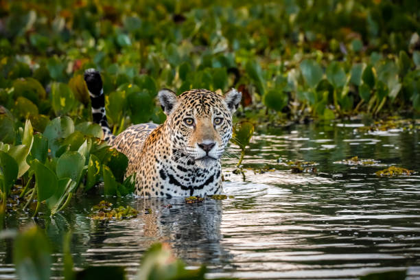
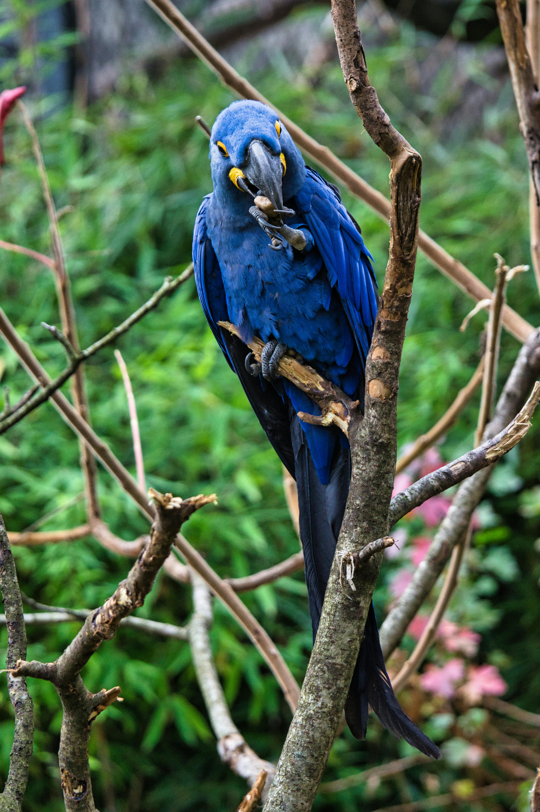
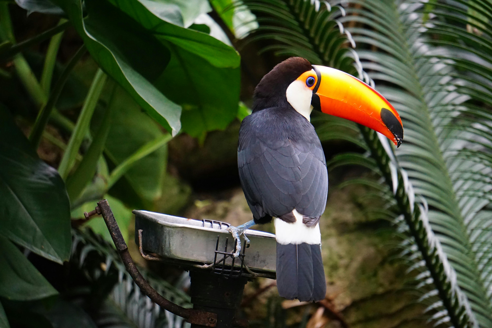

Onça-pintada
A onça-pintada é o maior felino das Américas. Forte, ágil e boa nadadora, tem pelagem amarela com manchas escuras...
Saiba mais
A onça-pintada é o maior felino das Américas. Forte, ágil e boa nadadora, tem pelagem amarela com manchas escuras...
Saiba mais
A arara-azul é uma grande ave de plumagem azul intensa. Vive em áreas como o Pantanal e a Amazônia, alimentando-se de frutos...
Saiba mais
O tucano é uma ave tropical conhecida pelo grande bico colorido. Vive em florestas e se alimenta de frutas, ajudando a espalhar sementes.
Saiba mais